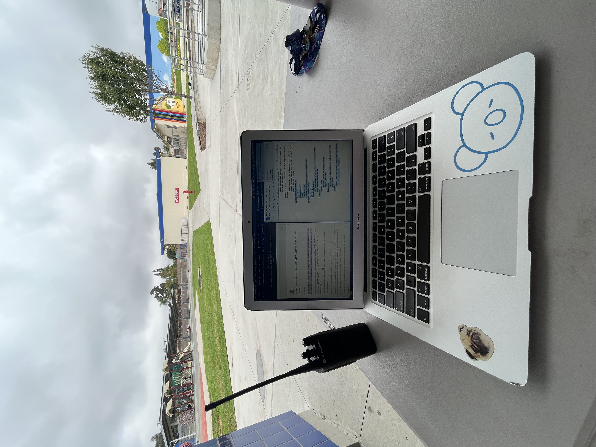
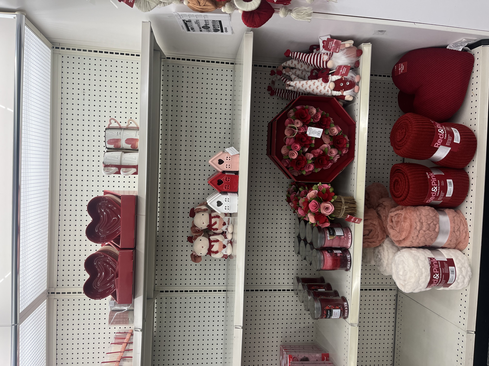
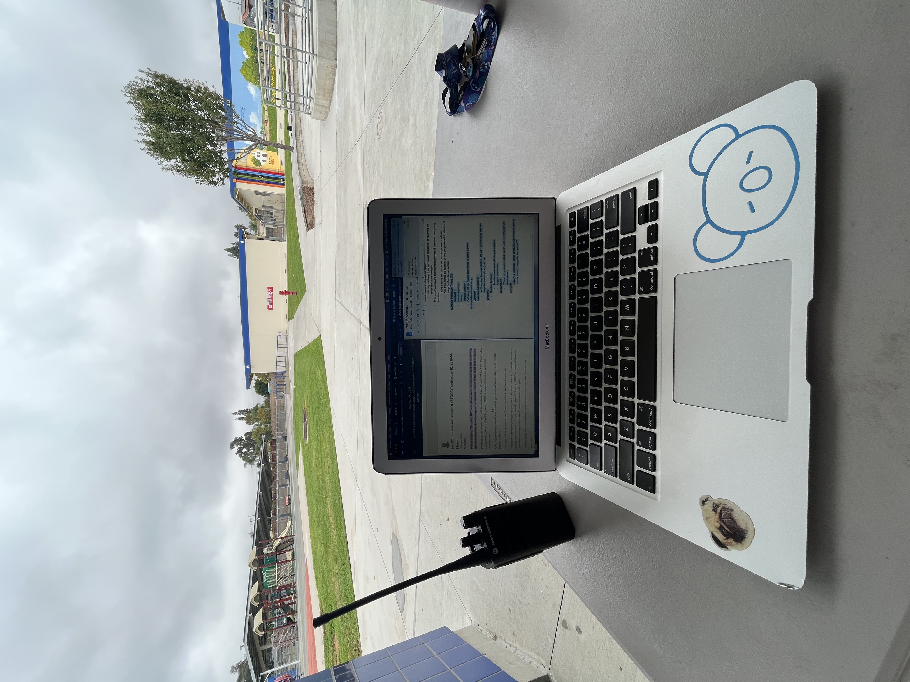
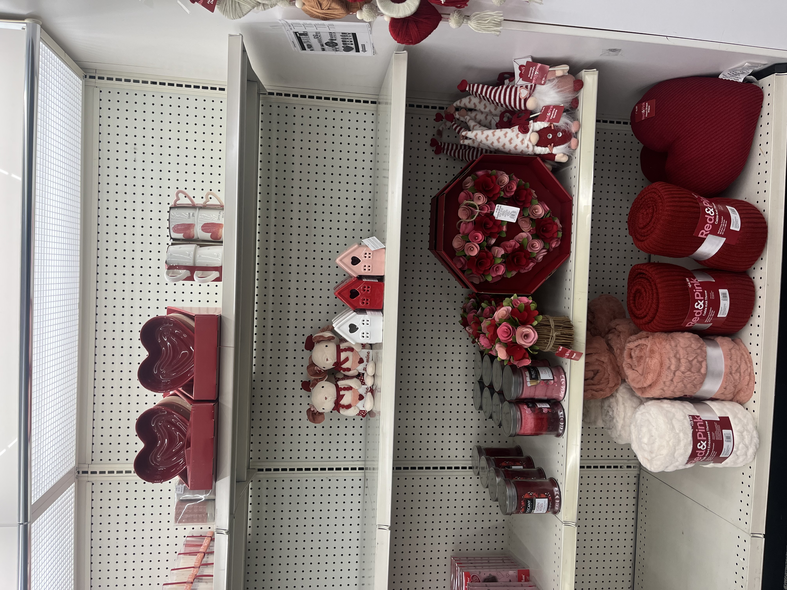
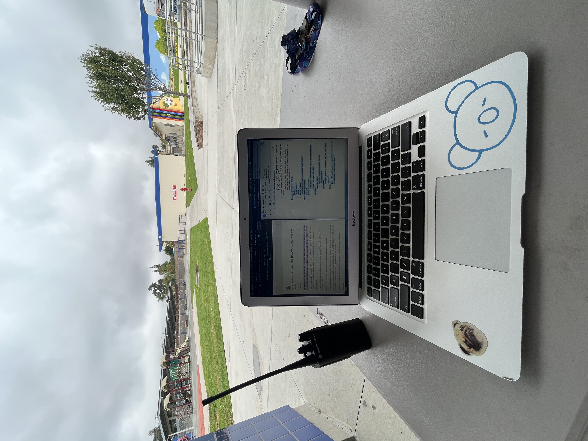
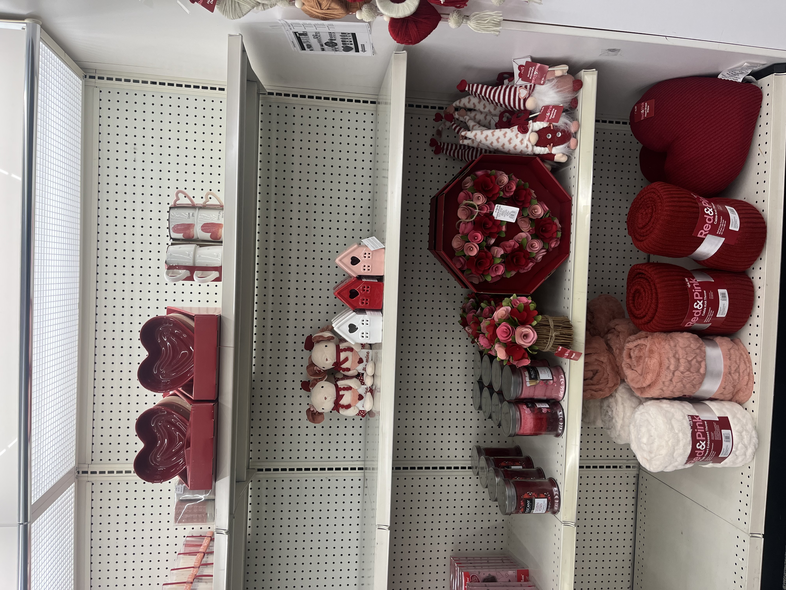

Emma Smith
As a dynamic and motivated Political Science undergraduate currently in my sophomore year, my academic and professional journey is characterized by a deep-seated passion for understanding the complex tapestry of societal structures and governance. My dedication to exploring the intricacies of political theory and practice is complemented by a diverse range of experiences in food service, retail, and education. These roles have not only broadened my perspective on societal dynamics but have also honed my skills in communication, leadership, and problem-solving.
My first foray into the professional world began in the food service industry, where I embraced the challenges of a fast-paced environment. This experience was instrumental in developing my ability to work under pressure, manage time efficiently, and collaborate effectively with a team. The fast-paced nature of food service required quick thinking and adaptability, skills that are invaluable in both academic pursuits and the ever-changing political landscape.
Transitioning into retail, I further expanded my skill set, particularly in the areas of customer service and sales. This role sharpened my interpersonal skills, teaching me the importance of clear communication, empathy, and persuasion. I learned to navigate diverse customer needs, manage conflicts, and foster a positive environment, all while driving sales goals. These experiences have been pivotal in understanding the dynamics of human behavior, a critical aspect of political science.
Perhaps most transformative has been my role as an elementary school coach, in charge of running physical activities for the children in place of PE and supervising after-school program. This position demanded not only physical stamina but also emotional intelligence, leadership, and creative problem-solving. Developing and implementing engaging curriculums that cater to the varied needs of children taught me the importance of adaptability and innovation. Leading a program meant being a role model, mediator, and educator, roles that have imbued me with a sense of responsibility, patience, and the ability to inspire and motivate others.
Academically, my pursuit of a degree in Political Science at University of California, Riverside has allowed me to delve deep into the study of political systems, public policy, and international relations. My coursework, ranging from Comparative Politics to Political Theory and International Relations, has equipped me with a solid foundation in analyzing political events, trends, and the impact of governance on societies. Engaging in debates, writing research papers, and participating in model United Nations has not only sharpened my analytical skills but also enhanced my public speaking and negotiation abilities.
My diverse background, coupled with my academic pursuits, has prepared me to tackle complex challenges with a multi-faceted approach. I am eager to leverage my experiences and skills in a professional setting that values innovation, critical thinking, and a commitment to societal improvement. As I continue my journey in Political Science, I am driven by a desire to contribute meaningfully to the field, whether through research, policy analysis, or public service.
Experience
Food Service Associate
• Processed dining orders, prepared and served meals
• Worked in high-pressure environment, with an emphasis on teamwork
• Ensured quality food and customer service
Cashier
• Responsible for ensuring quality customer experience
• Highest performer for loyalty program enrollments
Coach/After-school Program Lead
• Ran sessions to allow students structured daily physical activity
• Worked with other coaches to ensure smooth operations
• Supervised and led after-school programs
• Ensured students' well-being and productiveness
Education
UC Riverside
Portfolio

 




